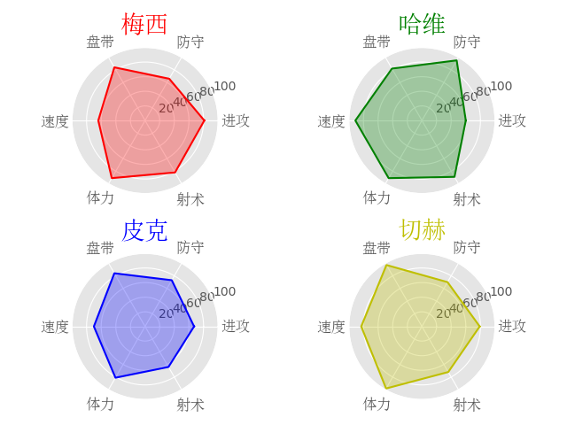

下面的图型是在一幅画布上建立的四个球员相关数据的极坐标图

关于这个图的代码如下：
1 #_*_coding:utf-8_*_
2 import numpy as np
3 import matplotlib.pyplot as plt
4 from matplotlib.font_manager import FontProperties
5 plt.style.use('ggplot')
6
7 font=FontProperties(fname=r'c:\windows\fonts\simsun.ttc',size=12)
8 # 本行是为了有效显示中文的字体与大小
9
10 ability_size=6
11 ability_label=['进攻','防守','盘带','速度','体力','射术']
12
13 # 创建每个极坐标的位置
14 ax1=plt.subplot(221,projection='polar')
15 ax2=plt.subplot(222,projection='polar')
16 ax3=plt.subplot(223,projection='polar')
17 ax4=plt.subplot(224,projection='polar')
18
19 player={
20 'M': np.random.randint(size=ability_size, low=60, high=99),
21 'H': np.random.randint(size=ability_size, low=60, high=99),
22 'P': np.random.randint(size=ability_size, low=60, high=99),
23 'Q': np.random.randint(size=ability_size, low=60, high=99),
24 }
25
26 theta=np.linspace(0,2*np.pi,6,endpoint=False)
27 theta=np.append(theta,theta[0])
28
29 #下面分别画四个球员的能力极坐标图
30 player['M']=np.append(player['M'],player['M'][0])
31 ax1.plot(theta,player['M'],'r')
32 ax1.fill(theta,player['M'],'r',alpha=0.3)
33 ax1.set_xticks(theta)
34 ax1.set_xticklabels(ability_label,fontproperties=font)
35 ax1.set_title('梅西',fontproperties=font,color='r',size=20)
36 ax1.set_yticks([20,40,60,80,100])
37
38 player['H']=np.append(player['H'],player['H'][0])
39 ax2.plot(theta,player['H'],'g')
40 ax2.fill(theta,player['H'],'g',alpha=0.3)
41 ax2.set_xticks(theta)
42 ax2.set_xticklabels(ability_label,fontproperties=font)
43 ax2.set_title('哈维',fontproperties=font,color='g',size=20)
44 ax2.set_yticks([20,40,60,80,100])
45
46 player['P']=np.append(player['P'],player['P'][0])
47 ax3.plot(theta,player['P'],'b')
48 ax3.fill(theta,player['P'],'b',alpha=0.3)
49 ax3.set_xticks(theta)
50 ax3.set_xticklabels(ability_label,fontproperties=font)
51 ax3.set_title('皮克',fontproperties=font,color='b',size=20)
52 ax3.set_yticks([20,40,60,80,100])
53
54 player['Q']=np.append(player['Q'],player['Q'][0])
55 ax4.plot(theta,player['Q'],'y')
56 ax4.fill(theta,player['Q'],'y',alpha=0.3)
57 ax4.set_xticks(theta)
58 ax4.set_xticklabels(ability_label,fontproperties=font)
59 ax4.set_title('切赫',fontproperties=font,color='y',size=20)
60 ax4.set_yticks([20,40,60,80,100])
61
62 plt.show()上述代码也可以利用for循环简化一下
1 #_*_coding:utf-8_*_
2 import numpy as np
3 import matplotlib.pyplot as plt
4 from matplotlib.font_manager import FontProperties
5 plt.style.use('ggplot')
6
7 font=FontProperties(fname=r'c:\windows\fonts\simsun.ttc',size=12)
8
9 ability_size=6
10 ability_label=['进攻','防守','盘带','速度','体力','射术']
11
12 ax1=plt.subplot(221,projection='polar')
13 ax2=plt.subplot(222,projection='polar')
14 ax3=plt.subplot(223,projection='polar')
15 ax4=plt.subplot(224,projection='polar')
16
17 player={
18 'M': np.random.randint(size=ability_size, low=60, high=99),
19 'H': np.random.randint(size=ability_size, low=60, high=99),
20 'P': np.random.randint(size=ability_size, low=60, high=99),
21 'Q': np.random.randint(size=ability_size, low=60, high=99),
22 }
23
24 theta=np.linspace(0,2*np.pi,6,endpoint=False)
25 theta=np.append(theta,theta[0])
26
27 color4=['r','b','g','y']
28 player4=['M','H','P','Q']
29 ax=[ax1,ax2,ax3,ax4]
30 name=['梅西','哈维','皮克','切赫']
31 for i in range(4):
32 player[player4[i]]=np.append(player[player4[i]],player[player4[i]][0])
33 ax[i].plot(theta,player[player4[i]],color4[i])
34 ax[i].fill(theta,player[player4[i]],color4[i],alpha=0.3)
35 ax[i].set_xticks(theta)
36 ax[i].set_xticklabels(ability_label,fontproperties=font)
37 ax[i].set_title(name[i],fontproperties=font,color=color4[i],size=20)
38 ax[i].set_yticks([20,40,60,80,100])
39
40 plt.show()